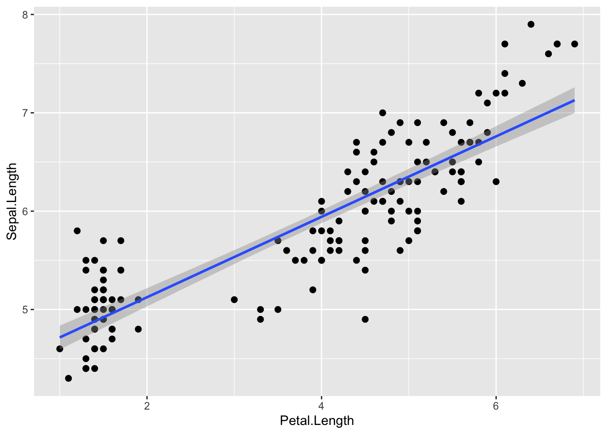
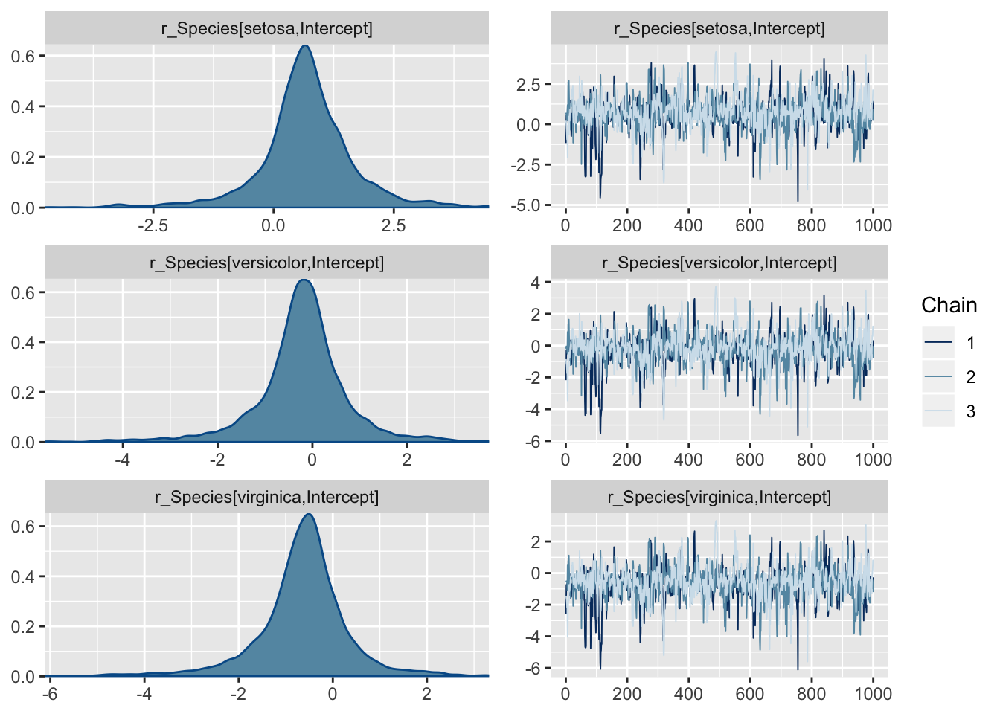
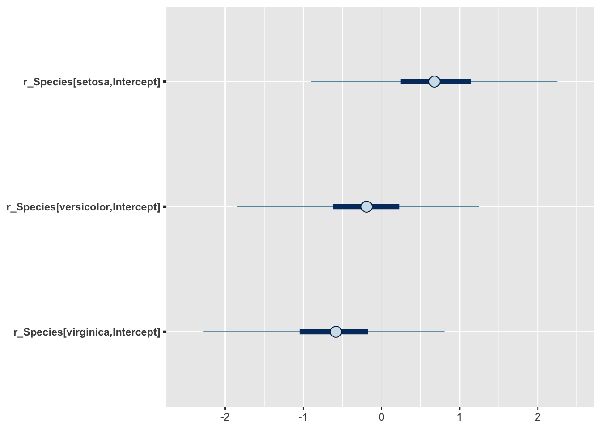
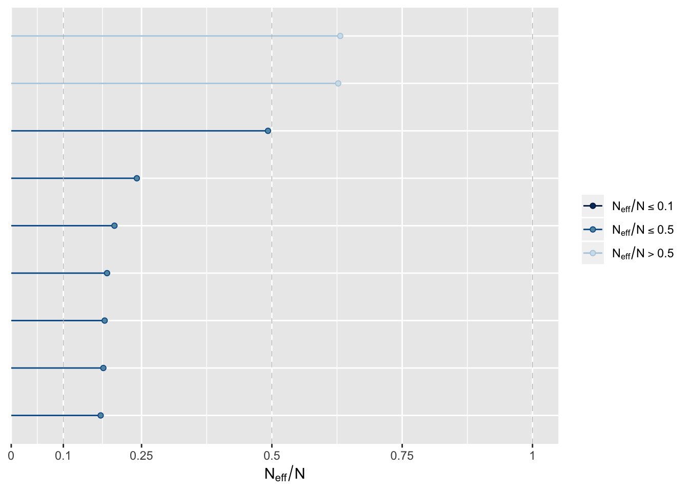
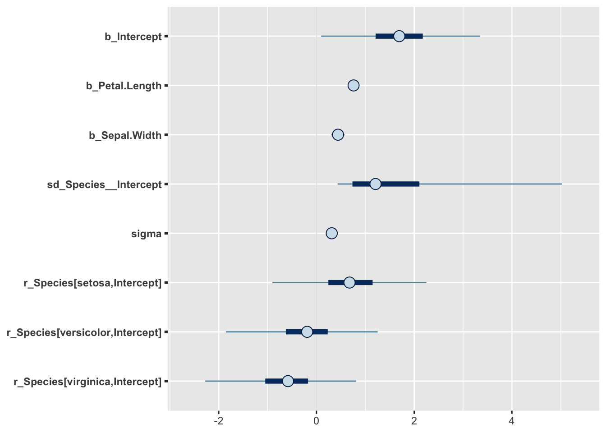
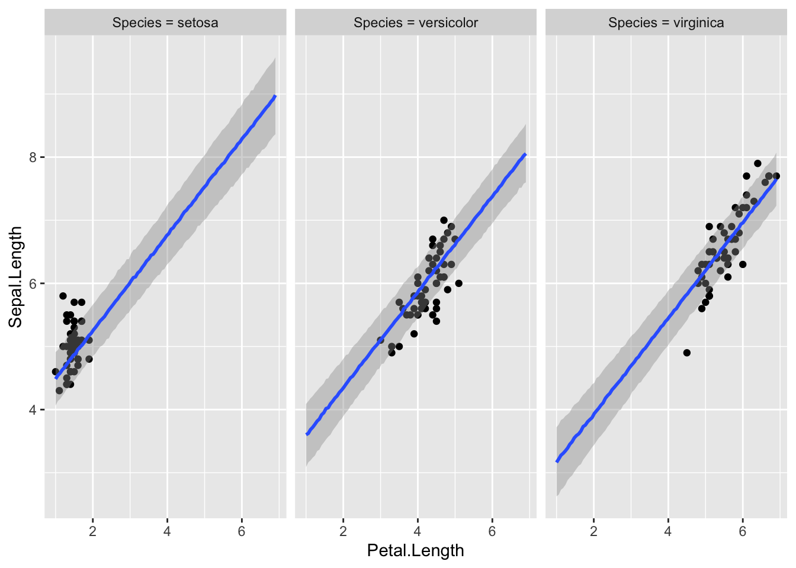

18 brms
brms on populaarne pakett, mis võimaldab kirjutada lihtsas ja lühidas keeles ka üsna keerulisi mudeleid ja need Stan-is fittida. Brms on ühe inimese (Paul Bürkner) projekt (https://github.com/paul-buerkner/brms), mis on jõudnud ette Stani meeskonna arendatavast analoogsest paketist rstanarm (https://github.com/stan-dev/rstanarm/blob/master/README.md). Paul Brükner oli mõned aastad tagasi psühholoogia doktorant, kes kirjutas brms-i naljaviluks oma doktoriprojekti kõrvalt, mille tulemusel on ta praegu teatud ringkonnis tuntum kui Lady Gaga.
rstanarm, mide me siin ei käsitle, püüab pakkuda tavalisete sageduslikele meetoditele (ANOVA, lineaarne regressioon jne) bayesi analooge, mille mudeli spetsifikatsioon ja väljund erineks võimalikult vähe tavalisest baas-R-i töövoost. Brms on keskendunud mitmetasemelistele mudelitele ja püüab kasutada mudelite keelt, mis on harjumuspärane sageduslike hierarhiliste mudelite fittimise paketi lme4 (https://github.com/lme4/lme4/) kasutajatele. Loomulikult saab brms-is fittida ka lineaarseid ja mitte-lineaareid ühetasemelisi mudeleid, nagu ka imputeerida andmeid ja teha palju muud.
library(tidyverse)
library(brms)
library(broom)
library(bayesplot)
library(mice)
library(pROC)18.1 brms-i töövoog
brms-iga modelleerimisel on mõned asjad, mida tuleks teha sõltumata sellest, millist mudelit te parajasti fitite. Kõigepealt peaksite kontrollima, et mcmc ahelad on korralikult jooksnud (divergent transitions, rhat ja ahelate visuaalne inspekteerimine). Lisaks peaksite tegema posterioorse prediktiivse ploti ja vaatama, kui palju mudeli poolt genereeritud uued valimid meenutavad teie valimit. Samuti peaksite joonisel plottima residuaalid. Kui te inspekteerite fititud parameetrite väärtusi, siis tehke seda posteeriorite tasemel, k.a. koos veapiiridega. Kindlasti tuleks ka plottida mudeli ennustused koos usalduspiiridega.
Enne tõsist mudeldamist kiikame irise andmetabelisse
summary(iris)
#> Sepal.Length Sepal.Width Petal.Length Petal.Width
#> Min. :4.30 Min. :2.00 Min. :1.00 Min. :0.1
#> 1st Qu.:5.10 1st Qu.:2.80 1st Qu.:1.60 1st Qu.:0.3
#> Median :5.80 Median :3.00 Median :4.35 Median :1.3
#> Mean :5.84 Mean :3.06 Mean :3.76 Mean :1.2
#> 3rd Qu.:6.40 3rd Qu.:3.30 3rd Qu.:5.10 3rd Qu.:1.8
#> Max. :7.90 Max. :4.40 Max. :6.90 Max. :2.5
#> Species
#> setosa :50
#> versicolor:50
#> virginica :50
#>
#>
#> ggplot(iris, aes(Petal.Length, Sepal.Length)) +
geom_point(aes(color = Species)) +
geom_smooth(method = lm) +
geom_smooth( color = "black", size = 0.5)
Loess fit viitab, et 3 liiki ühe sirgega mudeldada pole võib-olla optimaalne lahendus.
ggplot(iris, aes(Petal.Length, Sepal.Length, color = Species)) +
geom_point() +
geom_smooth(method = lm) +
geom_smooth(data=iris %>% filter(Species =="virginica"),
se = FALSE, color = "black", size = 0.5)+
geom_smooth(data=iris %>% filter(Species =="versicolor"),
se = FALSE, color = "black", size = 0.5)+
geom_smooth(data=iris %>% filter(Species =="setosa"),
se = FALSE, color = "black", size = 0.5)+
theme_classic()
Nüüd on loess ja lm heas kooskõlas - seos y~x vahel oleks nagu enam-vähem lineaarne. Siit tuleb ka välja, et kolme mudeli tõusud on sarnased, interceptid erinevad.
18.1.1 kiire töövoog
Minimaalses töövoos anname ette võimalikult vähe parameetreid ja töötame mudeliga nii vähe kui võimalik. See on mõeldud ülevaatena Bayesi mudeli fittimise põhilistest etappidest
mudeli fittimine
m_kiire <- brm(Sepal.Length~Petal.Length, data= iris)
write_rds(m_kiire, path = "m_kiire.fit")Priorid on brms-i poolt ette antud ja loomulikult ei sisalda mingit teaduslikku informatsiooni. Nad on siiski “nõrgalt informatiivsed” selles mõttes, et kasutavad parametriseeringuid, mis enamasti võimaldavad mcmc ahelatel normaalselt joosta. Järgmises ptk-s õpime ise prioreid määrama.
posteeriorid ja mcmc ahelate konvergents
plot(m_kiire)
Fiti kokkuvõte - koefitsiendid ja nende fittimise edukust hindavad statistikud (Eff.Sample, Rhat)
m_kiire %>% tidy
#> term estimate std.error lower upper
#> 1 b_Intercept 4.307 0.0780 4.179 4.434
#> 2 b_Petal.Length 0.409 0.0187 0.379 0.439
#> 3 sigma 0.411 0.0243 0.373 0.453
#> 4 lp__ -85.338 1.2173 -87.757 -84.015Eff.Sample näitab efektiivset valimi suurust, mida ahelad on kasutanud. See on suht keeruline mõiste, aga piisab, kui aru saada, et see näitaja ei tohiks olla madalam kui paarkümmend.
Rhat on statistik, mis vaatab ahelate konvergentsi. Kui Rhat > 1.1, siis on kuri karjas. Rhat 1.0 ei tähenda paraku, et võiks rahulikult hingata – tegu on statistikuga, mida saab hästi tõlgendada häda kuulutajana, aga liiga sageli mitte vastupidi.
Ennustav plot ehk marginal plot - mudeli fit 95% CI-ga.
plot(marginal_effects(m_kiire), points=TRUE)
18.1.2 Põhjalikum töövoog
Põhiline erinevus eelmisega on suurem tähelepanu prioritele, mudeli fittimise diagnostikale ning tööle fititud mudeliga.
18.1.3 Spetsifitseerime mudeli struktuuri, vaatame default prioreid ja muudame neid.
brms-i default priorid on konstrueeritud olema üsna väheinformatiivsed ja need tuleks enamasti informatiivsematega asendada. Igasse priorisse tuleks panna nii palju informatsiooni, kui teil on vastava parameetri kohta. Kui te mõne parameetri kohta ei oska öelda, milllised oleks selle mõistlikud oodatavad väärtused, siis saab piirduda brms-i antud vaikeväärtustega. Samas, kui keerulisemad mudelid ei taha hästi joosta (mida tuleb ikka ette), siis aitab sageli priorite kitsamaks muutmine.
get_prior(Sepal.Length~Petal.Length + (1 | Species),
data= iris)
#> prior class coef group resp dpar nlpar bound
#> 1 b
#> 2 b Petal.Length
#> 3 student_t(3, 6, 10) Intercept
#> 4 student_t(3, 0, 10) sd
#> 5 sd Species
#> 6 sd Intercept Species
#> 7 student_t(3, 0, 10) sigmaMe fitime pedagoogilistel kaalutlustel shrinkage mudeli, mis tõmbab 3 liigi intercepte natuke keskmise intercepti suunas. On vaieldav, kas see on irise andmestiku juures mõistlik strateegia, aga me teeme seda siin ikkagi.
Mitmetasemeline shrinkage mudel on abinõu ülefittimise vastu. Mudelite võrdlemisel otsitakse kompromissi - ehk mudeli, mille ennustused oleks andmepunktidele võimalikult lähedal ilma,et see mudel oleks liiga keeruliseks aetud (keerulisus on proportsionaalne mudeli parameetrite arvuga).
Prioreid muudame nii
prior <- c(prior(normal(6, 3), class = "Intercept"),
prior(normal(0, 1), class ="b"),
prior(student_t(6, 0, 2), class = "sigma"))Me valime siin nn väheinformariivsed priorid, nii et regressiooni tulemus on suht hästi võrreldav lme4 sagedusliku mudeliga. “b” koefitsiendi priorile (aga mitte “sigma” ega “Intercept”-le) võib anda ka ülemise ja/või alumise piiri [prior(normal(0, 1), class =“b”, lb= -1, ub=10) ütleb, et “b” prior on nullist erinev ainult -1 ja 10 vahel]. sigma priorid on automaatselt lb = 0 -ga sest varieeruvus ei saa olla negatiivne.
Alati tasub prioreid pildil vaadata, et veenduda nende mõistlikuses.
x <- seq(0, 10, length.out = 100)
y <- brms::dstudent_t(x, df = 6, mu = 0, sigma = 2, log = FALSE)
plot(y~x) Sigma prior, mida brms kasutab, on vaikimisi pool sümmeetrilisest jaotusest, mis lõigatakse nulli kohalt pooleks nii, et seal puuduvad < 0 väärtused (seega ei saa varieeruvuse posteerior minna alla nulli).
Sigma prior, mida brms kasutab, on vaikimisi pool sümmeetrilisest jaotusest, mis lõigatakse nulli kohalt pooleks nii, et seal puuduvad < 0 väärtused (seega ei saa varieeruvuse posteerior minna alla nulli).
Me võime ka prioreid ilma likelihoodideta (tõepärafunktsioonideta) läbi mudeli lasta, misjärel tõmbame fititud mudelist priorite samplid. Seda võimalust kasutatakse harva, aga teada tasub ikka.
Tekitame priorite valimid, et näha oma priorite mõistlikust (brm() argument on sample_prior = TRUE). Ühtlasi fitime ka oma mudeli koos andmete ja prioritega.
m1 <- brm(Sepal.Length~Petal.Length + (1 | Species),
data= iris,
prior = prior,
family = gaussian,
warmup = 1000,
iter = 2000,
chains = 3,
cores = 3,
sample_prior=TRUE)
write_rds(m1, path = "m1.fit")Me fittisime mudeli m1 kaks korda: nii andmetega (selle juurde jõuame varsti), kui ka ilma andmeteta. Ilma andmeteta (likelihoodita) fitist saame tõmmata priorite mcmc valimid, mille ka järgmiseks plotime.
samples1 <- prior_samples(m1)
sa <- samples1 %>% gather()
ggplot(sa)+ geom_density(aes(value)) +
facet_wrap(~key, scales="free_x")
18.1.4 brm() funktsiooni argumendid:
family - tõepärafunktsiooni tüüp (modelleerib y muutuja jaotust e likelihoodi)
warmup - mitu sammu mcmc ahel astub, enne kui ahelat salvestama hakatakse. tavaliselt on 500-1000 sammu piisav, et tagada ahelate konvergents. Kui ei ole, tõstke 2000 sammuni.
iter - ahelate sammude arv, mida salvestatakse peale warmup perioodi. Enamasti on 2000 piisav. Kui olete nõus piirduma posteeriori keskväärtuse arvutamisega ja ei soovi täpseid usaldusintervalle, siis võib piisata ka 200 sammust.
chains - mitu sõltumatut mcmc ahelat jooksutada. 3 on hea selleks, et näha kas ahelad konvergeeruvad. Kui mitte, tuleks lisada informatiivsemaid prioreid ja/või warmupi pikkust.
cores - mitu teie arvuti tuuma ahelaid jooksutama panna.
adapt_delta - mida suurem number (max = 1), seda stabiilsemalt, ja aeglasemalt, ahelad jooksevad.
thin - kui ahel on autokorreleeritud, st ahela eelmine samm suudab ennustada järgevaid (see on paha), siis saab salvestada näit ahela iga 5. sammu (thin = 5). Aga siis tuleks ka sammude arvu 5 korda tõsta. Vaikeväärtus on thin = 1. Autokorrelatsiooni graafilist määramist näitame allpool
Järgmine funktsioon trükib välja Stani koodi, mis spetsifitseerib mudeli, mida tegelikult Stanis fittima hakatakse. See on väga kasulik, aga ainult siis kui tahate õppida otse Stanis mudeleid kirjutama.
make_stancode(Sepal.Length~Petal.Length, data= iris,
prior = prior)18.1.5 Fitime mudeleid ja võrdleme fitte.
Mudelis m1 ennustame muutuja Sepal.Length väärtusi Petal.Length väärtuste põhjal shrinkage mudelis, kus iga irise liik on oma grupis.
Teine mudel, m2, sisaldab veel üht ennustavat muutujat (Sepal.Width).
m2 <- brm(Sepal.Length~Petal.Length + Sepal.Width + (1 | Species),
data= iris,
prior = prior,
chains = 3,
cores = 4,
control = list(adapt_delta = 0.95))
write_rds(m2, path = "m2.fit")Kolmandaks ühetasemeline mudel, m3, mis vaatab kolme irise liiki eraldi
m3 <- brm(Sepal.Length~ Sepal.Width + Petal.Length*Species,
data= iris,
prior = prior,
chains = 3,
cores = 3)
write_rds(m3, path = "m3.fit")Ja lõpuks lihtne mudel, m4, mis paneb kõik liigid ühte patta.
m4 <- brm(Sepal.Length~Petal.Length + Sepal.Width,
data= iris,
prior = prior,
chains = 3,
cores = 4)
write_rds(m4, path = "m4.fit")m2 <- read_rds("m2.fit")
m3 <- read_rds("m3.fit")
m4 <- read_rds("m4.fit")Siin me võrdleme neid nelja mudelit. Väikseim looic (leave-one-out information criterion) võidab. See on suhteline võrdlus – looic abs väärtus ei mängi mingit rolli.
loo(m1, m2, m3, m4)Siin on m1 ja m2/m3 mudeli erinevus 25 ühikut ja selle erinevuse standardviga on 10 ühikut. 2 SE-d annab umbkaudu 95% usaldusintervalli, ja see ei kata antud juhul nulli. Seega järeldame, et m2 ja m3, mis kasutavad ennustamiseks lisamuutujat, on selgelt eelistatud. Samas ei saa me õelda, et hierarhiline mudel m2 oleks parem või halvem kui interaktsioonimudel m3. Ka puudub oluline erinevus m1 ja m4 fiti vahel. Tundub, et selle ennustusjõu, mille me võidame lisaparameetrit mudeldades, kaotame omakorda liike ühte patta pannes (neid mitte osaliselt iseseisvana modelleerides).
Alternatiivina kasutame brms::waic kriteeriumit mudelite võrdlemiseks. See töötab kiiremini kui LOO ja tõlgendus on sarnane - väikseim waic võidab ja absolutväärtusi ei saa ükshaaval tõlgendada.
brms::waic(m1, m2, m3, m4)
#> WAIC SE
#> m1 106.40 16.64
#> m2 81.55 16.10
#> m3 79.96 15.76
#> m4 100.53 16.41
#> m1 - m2 24.85 9.63
#> m1 - m3 26.44 10.67
#> m1 - m4 5.87 15.28
#> m2 - m3 1.60 3.34
#> m2 - m4 -18.98 9.90
#> m3 - m4 -20.57 9.95Nagu näha, annavad LOO ja waic sageli väga sarnaseid tulemusi.
Me ei süvene LOOIC ega waic-i statistilisse mõttesse, sest bayesi mudelite võrdlemine on kiiresti arenev ala, kus ühte parimat lahendust pole veel leitud.
18.1.6 vaatame mudelite kokkuvõtet
Lihtne tabel mudeli m2 fititud koefitsientidest koos 95% usalduspiiridega
tidy(m2)
#> term estimate std.error lower upper
#> 1 b_Intercept 1.710 1.0270 0.095 3.345
#> 2 b_Petal.Length 0.759 0.0645 0.651 0.866
#> 3 b_Sepal.Width 0.440 0.0839 0.303 0.576
#> 4 sd_Species__Intercept 1.725 1.5315 0.433 5.024
#> 5 sigma 0.313 0.0186 0.284 0.345
#> 6 r_Species[setosa,Intercept] 0.676 0.9925 -0.901 2.250
#> 7 r_Species[versicolor,Intercept] -0.226 0.9842 -1.853 1.253
#> 8 r_Species[virginica,Intercept] -0.642 0.9907 -2.277 0.809
#> 9 lp__ -50.433 2.3680 -54.788 -47.169r_ prefiks tähendab, et antud koefitsient kuulub mudeli esimesele (madalamale) tasemele (Liigi tase) r- random - tähendab, et iga grupi (liigi) sees arvutatakse oma fit. b_ tähendab mudeli 2. taset (keskmistatud üle kõikide gruppide). 2. tasmel on meil intercept, b1 ja b2 tõusud ning standardhälve y muutuja ennustatud andempunktide tasemel. 1. tasemel on meil 3 liigi interceptide erinevus üldisest b_Intercepti väärtusest. Seega, selleks, et saada setosa liigi intercepti, peame tegema tehte 1.616 + 0.765.
tidy funktsiooni tööd saab kontrollida järgmiste parameetrite abil:
tidy(x, parameters = NA, par_type = c("all",
"non-varying", "varying", "hierarchical"), robust = FALSE,
intervals = TRUE, prob = 0.9, ...)par_type = “hierarchical” kuvab grupi taseme parameetrite sd-d ja korrelatsioonid. “varying” kuvab grupi taseme interceptid ja tõusud (siis kui neid mudeldadakse). “non-varying” kuvab kõrgema taseme (grupi-ülesed) parameetrid. robust = TRUE annab estimate posteeriori mediaanina (vaikeväärtus FALSE annab selle aritmeetilise keskmisena posteeriorist).
Nüüd põhjalikum mudeli kokkuvõte:
m2
#> Warning: There were 17 divergent transitions after warmup. Increasing adapt_delta above 0.95 may help.
#> See http://mc-stan.org/misc/warnings.html#divergent-transitions-after-warmup
#> Family: gaussian
#> Links: mu = identity; sigma = identity
#> Formula: Sepal.Length ~ Petal.Length + Sepal.Width + (1 | Species)
#> Data: iris (Number of observations: 150)
#> Samples: 3 chains, each with iter = 2000; warmup = 1000; thin = 1;
#> total post-warmup samples = 3000
#>
#> Group-Level Effects:
#> ~Species (Number of levels: 3)
#> Estimate Est.Error l-95% CI u-95% CI Eff.Sample Rhat
#> sd(Intercept) 1.72 1.53 0.36 5.98 503 1.00
#>
#> Population-Level Effects:
#> Estimate Est.Error l-95% CI u-95% CI Eff.Sample Rhat
#> Intercept 1.71 1.03 -0.36 4.08 550 1.01
#> Petal.Length 0.76 0.06 0.63 0.88 1380 1.00
#> Sepal.Width 0.44 0.08 0.27 0.60 1857 1.00
#>
#> Family Specific Parameters:
#> Estimate Est.Error l-95% CI u-95% CI Eff.Sample Rhat
#> sigma 0.31 0.02 0.28 0.35 1882 1.00
#>
#> Samples were drawn using sampling(NUTS). For each parameter, Eff.Sample
#> is a crude measure of effective sample size, and Rhat is the potential
#> scale reduction factor on split chains (at convergence, Rhat = 1).Siin on eraldi toodud grupi tasemel ja populatsiooni tasemel koefitsiendid ja gruppide vaheline sd (= 1.72). Pane tähele, et üldine varieeruvus sigma = 0.31 on palju väiksem kui gruppide vaheline varieeruvus sd(Intercept) = 1.72. Seega on grupid üksteisest tugevalt erinevad ja neid tuleks võib-olla tõesti eraldi modelleerida.
Divergentsed transitsioonid on halvad asjad - ahelad on läinud 17 korda metsa. Viisakas oleks adapt deltat tõsta või kitsamad priorid panna, aga 17 halba andmepunkti paarist tuhandest, mille mcmc ahelad meile tekitasid, pole ka mingi maailmalõpp. Nii et las praegu jääb nagu on. Need divergentsed transitsioonid on kerged tekkima just mitmetasemelistes mudelites.
18.1.7 plotime posteeriorid ja ahelad
plot(m2)
Siit on näha, et ahelad on ilusti konvergeerunud. Ühtlasi on pildil posterioorsed jaotused fititud koefitsientidele.
regular expressioni abil saab plottida mudeli madalama taseme ahelaid & posteerioreid, mida plot() vaikimisi ei näita.
#regex works!
plot(m2, pars = "r_", theme = theme_dark())
Vaatame korrelatsioone erinevate parameetrite posterioorsete valimite vahel. (Markovi ahelad jooksevad n-mõõtmelises ruumis, kus n on mudeli parameetrite arv, mille väärtusi hinnatakse.) pairs(m3) teeb pildi ära, aga ilusama pildi saab GGally::ggpairs() abil.
pairs(m2, pars="b_")
library(GGally)
posterior_samples(m2) %>%
select(contains("b_")) %>%
ggpairs()Siin on posteeriorite põhjal arvutatud 50% ja 95% CI ja see plotitud.
stanplot(m2, pars = "r_", type = "intervals")
type= argument sisestamine võimaldab plottida erinevaid diagnostilisi näitajaid. Lubatud sisendid on “hist”, “dens”, “hist_by_chain”, “dens_overlay”, “violin”, “intervals”, “areas”, “acf”, “acf_bar”, “trace”, “trace_highlight”, “scatter”, “rhat”, “rhat_hist”, “neff”, “neff_hist” “nuts_acceptance”, “nuts_divergence”, “nuts_stepsize”, “nuts_treedepth” ja “nuts_energy”.
stanplot(m2, type="neff")
Neff on efektiivne valimi suurus ja senikaua kuni Neff/N suhe ei ole < 0.1, pole põhjust selle pärast muretseda.
18.1.8 korjame ahelad andmeraami ja plotime fititud koefitsiendid CI-dega
model <- posterior_samples(m1)
#model <- m1$fit %>% as.data.frame()
##töötab samamoodimcmc_intervals() on bayesplot paketi funktsioon. me plotime 50% ja 95% CI-d.
pars <- names(model)
mcmc_intervals(model, pars=pars[-length(pars)])
#with pars left out the last parameter lp_
Näeme, et sigma hinnang on väga usaldusväärne, samas kui gruppide vahelise sd hinnang ei ole seda mitte (pane tähele posterioorse jaotuse ebasümmeetrilisust).
model2 <- m2$fit %>% as.data.frame()
pars <- names(model2)
mcmc_intervals(model2, pars=pars[-length(pars)])
mcmc_areas(model2, pars=c("b_Petal.Length", "b_Sepal.Width"))
18.1.9 bayesi versioon r-ruudust
kui suurt osa koguvarieeruvusest suudavad mudeli prediktorid seletada?
bayes_R2(m2)
#> Estimate Est.Error Q2.5 Q97.5
#> R2 0.86 0.00831 0.84 0.873bayes_R2(m1)
#> Estimate Est.Error Q2.5 Q97.5
#> R2 0.833 0.0109 0.807 0.85https://github.com/jgabry/bayes_R2/blob/master/bayes_R2.pdf Annab põhjenduse sellele statistikule (mille arvutamine erineb tavalisest vähimruutudega arvutatud mudeli r2-st).
18.1.10 plotime mudeli poolt ennustatud valimeid - posterior predictive check
Kui mudel suudab genereerida simuleeritud valimeid, mis ei erine väga palju empiirilisest valimist, mille põhjal see mudel fititi, siis võib-olla ei ole see täiesti ebaõnnestunud mudeldamine. See on loogika posterioorse ennustava ploti taga.
gridExtra::grid.arrange(pp_check(m1), pp_check(m2), pp_check(m3), nrow = 3)
y - tihedusplot empiirilistest andmetest y_rep - plotid mudeli poolt ennustatud iseseisvatest valimitest (igaüks sama suur kui empiiriline valim y) Jooniselt on näha, et m3 ennustused on võrreldes m1 ja m2-ga kõige kaugemal tegelikust valimist.
18.1.11 plotime mudeli ennustusi - marginal effects plots
teeme ennustused
Kõigepealt ennustame ühe keskmise mudeliga, mis ei arvesta mitmetasemelise mudeli madalamte tasemete koefitsientidega.
plot(marginal_effects(m2, effects= "Petal.Length", method = "predict", probs=c(0.1, 0.9)), points = TRUE, theme = theme_bw())
marginal_effects(m2, effects= "Petal.Length", method = "predict", probs=c(0.1, 0.9))
Ennustus on selles mõttes ok, et vaid väike osa punkte jääb sellest välja, aga laiavõitu teine!
Nüüd ennustame sama mudeli põhjal igale liigile eraldi. Seega kasutame mudeli madalama taseme koefitsiente. peame andma lisaparameetri re_formula = NULL, mis tagab, et ennustuse tegemisel kasutatakse ka mudeli madalama taseme koefitsiente.
conditions <- data.frame(Species =c("setosa", "virginica", "versicolor"))
plot(marginal_effects(m2, effects= "Petal.Length", method = "predict", conditions = conditions, probs=c(0.1, 0.9), re_formula = NULL), points = TRUE, theme = theme_bw())
method = “predict” ennustab, millisesse vahemikku peaks mudeli järgi jääma 90% andmepunkte (k.a. uued andmepunktid, mida pole veel valimisse korjatud).
Tõesti, valdav enamus valimi punkte on intervallis sees, mis viitab et mudel töötab hästi. Seal, kus on rohkem punkte, on intervall kitsam (mudel on usaldusväärsem).
Järgneval pildil on method = “fitted”. Nüüd on enamus punkte väljaspool usaldusintervalle, mis sellel pildil mõõdavad meie usaldust regressioonijoone vastu.
conditions <- data.frame(Species =c("setosa", "virginica", "versicolor"))
plot(marginal_effects(m2, effects= "Petal.Length", method = "fitted", conditions = conditions, probs=c(0.1, 0.9), re_formula = NULL), points = TRUE, theme = theme_bw()) method = “fitted” annab CI regressioonijoonele.
method = “fitted” annab CI regressioonijoonele.
argumendid:
method - predict annab veapiirid (95% CI) mudeli ennustustustele andmepunkti tasemel. fitted annab veapiirid mudeli fitile endale (joonele, mis tähistab keskmist või kõige tõenäolisemat y muutuja väärtust igal x-i väärtusel)
conditions - andmeraam, kus on kirjas mudeli nendele ennustavatele (x) muutujatele omistatud väärtused, mida ei joonistata x teljele. Kuna meil on selleks mudeli madalama taseme muutuja Species, siis on lisaks vaja määrata argument re_formula = NULL, mis tagab, et ennustuste tegemisel kasutatakse mudeli kõikide tasemete fititud koefitsiente. re_formula = NA annab seevastu keskmise fiti üle kõigi gruppide (irise liikide)
probs annab usaldusintervalli piirid.
Pane tähele, et argumendid points ja theme kuuluvad plot(), mitte marginal_effects() funktsioonile.
tavaline interaktsioonimudel, aga pidevatele muutujatele.
m5 <- brm(Sepal.Length~Petal.Length + Sepal.Width + Petal.Length*Sepal.Width,
data= iris,
prior = prior,
family = gaussian,
warmup = 1000,
iter = 2000,
chains = 3,
cores = 4,
control = list(adapt_delta = 0.95))
write_rds(m5, path = "m5.fit")m5 <- read_rds("m5.fit")Kõigepealt plotime mudeli ennustused, kuidas Sepal Length sõltub Petal Length-ist kolmel erineval Sepal width väärtusel. Ja siis sümmeetriliselt vastupidi.
plot(marginal_effects(m5,
effects = "Petal.Length:Sepal.Width"),
points = T)
plot(marginal_effects(m5,
effects = "Sepal.Width:Petal.Length"),
points = T)

Siin lisame enda soovitud Sepal Width väärtused (5 ja 1.2), mis on väljaspool seda, mida loodus pakub. Pane tähele ennustuse laiu CI-sid.
conditions <- data.frame(Sepal.Width = c(5, 1.2))
plot(marginal_effects(m5, effects = "Petal.Length", conditions = conditions, re_formula = NULL), points= TRUE)
18.1.12 Alternatiivne tee:
Teeme tabeli nende väärtustega, millele tahame mudeli ennustusi. Tabelis newx on spetsifitseeritud mudeli kõikide X muutujate väärtused! Me ennustame Y väärtusi paljudel meie poolt võrdse vahemaaga ette antud petal length väärtustel, kusjuures me hoiame sepal width väärtuse alati konstantsena tema valimi keskmisel väärtusel ja vaatame ennustusi eraldi kahele liigile kolmest. Liigid on mudeli madala taseme osad, seega kasutame ennustuste tegemisel mudeli kõikide tasemete koefitsiente.
newx <- expand.grid(Petal.Length = seq(min(iris$Petal.Length),
max(iris$Petal.Length),
length.out = 150),
Sepal.Width = mean(iris$Sepal.Width),
Species = c("setosa", "virginica")
)expand.grid() lõõb tabeli pikaks nii, et kõik võimalikud kombinatsioonid 3st muutujast on täidetud väärtustega.
reformula NULL mudeldab eraldi liigid eraldi mudeli madalama taseme (liikide sees) koefitsiente kasutades
predict_interval_brms2 <- predict(m2, newdata = newx, re_formula = NULL) %>%
cbind(newx,.)
head(predict_interval_brms2)
#> Petal.Length Sepal.Width Species Estimate Est.Error Q2.5 Q97.5
#> 1 1.00 3.06 setosa 4.49 0.315 3.89 5.13
#> 2 1.04 3.06 setosa 4.51 0.315 3.89 5.13
#> 3 1.08 3.06 setosa 4.56 0.325 3.95 5.20
#> 4 1.12 3.06 setosa 4.58 0.320 3.94 5.18
#> 5 1.16 3.06 setosa 4.60 0.321 3.96 5.22
#> 6 1.20 3.06 setosa 4.65 0.315 4.04 5.27predict() ennustab uusi petal length väärtusi (Estimate veerg) koos usaldusinetrvalliga neile väärtustele
Siin siis eraldi ennustused kahele liigile kolmest, kaasa arvatud petal length väärtusvahemikule, kus selle liigi isendeid valimis ei ole (ja võib-olla ei saagi olla)
iris1 <- iris %>% filter(Species != "versicolor")
ggplot(data = predict_interval_brms2, aes(x = Petal.Length, y = Estimate)) +
geom_point(data= iris1, aes(Petal.Length, Sepal.Length, color=Species)) +
geom_line(aes(color = Species)) +
geom_ribbon(aes(ymin = Q2.5, ymax = Q97.5, fill = Species), alpha = .1, colour = NA) +
scale_color_brewer(palette = 'Set1') +
ggthemes::theme_tufte()
Ennustav plot - kuidas lähevad kokku mudeli ennustused reaalsete y-i andmepunktidega
pr <- predict(m2) %>% cbind(iris)
ggplot(pr, aes(Sepal.Length, Estimate, color=Species))+
geom_pointrange(aes(ymin = Q2.5, ymax = Q97.5), alpha=0.5, size=0.2) +
geom_abline(intercept = 0, slope = 1, lty = 2) +
coord_cartesian( xlim=c( 4, 8 ), ylim=c( 4, 8 ))+
ggthemes::theme_tufte()
Igae andmepunktile - kui palju erineb selle residuaal 0-st - st kui hästi ennustab mudel just seda andmepunkti. Ruumi kokkuhoiuks plotime välja ainult irise esimele 50-le andmepunktile.
re <- residuals(m2) %>% cbind(iris)
re$indeks <- 1:nrow(re)
ggplot(re[1:50,], aes(x = Estimate, y = reorder(indeks, Estimate))) +
geom_vline(xintercept = 0, lty = 2) +
geom_point(size=1) +
geom_errorbarh(aes(xmin = Q2.5, xmax = Q97.5), color = "red", size =0.2) +
theme(text = element_text(size = 7), axis.title.y = element_blank())+
xlab("residuals (95 CI)")
Ok, isendid nr 15 ja 37 paistavad olema palju väiksema Sepal Lengthiga kui mudel ennustab. Võib küsida, miks?
Nüüd plotime usaldusintervalli mudeli fitile (keskmisele Y väärtusele igal määratud X-i väärtusel), mitte Y- ennustusele andmepunkti kaupa. Selleks on hea fitted() funktsioon. Me ennustame m2 mudelist vastavalt newdata parameetriväärtustele. Kui me newdata argumendi tühjaks jätame, siis võtab fitted() selleks automaatselt algse iris tabeli (ehk valimi väärtused).
predict_interval_brms2f <- fitted(m2, newdata = newx, re_formula = NULL) %>%
cbind(newx,.)
head(predict_interval_brms2f)
#> Petal.Length Sepal.Width Species Estimate Est.Error Q2.5 Q97.5
#> 1 1.00 3.06 setosa 4.49 0.0542 4.38 4.59
#> 2 1.04 3.06 setosa 4.52 0.0535 4.41 4.62
#> 3 1.08 3.06 setosa 4.55 0.0529 4.45 4.65
#> 4 1.12 3.06 setosa 4.58 0.0524 4.48 4.68
#> 5 1.16 3.06 setosa 4.61 0.0520 4.51 4.71
#> 6 1.20 3.06 setosa 4.64 0.0518 4.54 4.74ggplot(data = predict_interval_brms2f, aes(x = Petal.Length, y = Estimate, color = Species)) +
geom_point(data= iris1, aes(Petal.Length, Sepal.Length, color=Species)) +
geom_line() +
geom_ribbon(aes(ymin = Q2.5, ymax = Q97.5, fill = Species), alpha = .1, colour = NA) +
scale_x_continuous(breaks = 0:10) +
theme(panel.grid.minor = element_blank()) +
scale_color_brewer(palette = 'Set1')+
ggthemes::theme_tufte()
mudeli genereeritud andmed ja valimiandmed mõõtmisobjekti (subjekti e taimeisendi) kaupa. See on sisuliselt posterior predictive plot (vt eespool).
predict_subjects_brms <- predict(m2) %>% cbind(iris, .)
#ennustame andmeid igale taimele vastavate parameetriväärtustega
#ja paneme ennustused kokku algse irise tabeligapredict() arvutab mudeli põhjal uusi Y muutuja andmepunkte. Võib kasutada ka väljamõeldud andmete pealt Y väärtuste ennustamiseks (selleks tuleb anda ette andmeraam kõigi X-muutujate väärtustega, mille pealt tahetakse ennustusi).
tugevalt värvitud punktid on ennustused ja läbipastvad punktid on valimiandmed
ggplot(data = predict_subjects_brms, aes(Petal.Length, Estimate, color = Species)) +
geom_point(aes(Petal.Length, Estimate), alpha = .8)+
geom_point(data = iris, aes(Petal.Length, Sepal.Length), alpha = .3)+
ggthemes::theme_tufte()
Alternatiiv - ansambliennustus
Kuna meil on 2 mudelit, m2 ja m3, mis on pea võrdselt eelistatud, siis genreerime ennustused mõlemast (mudelite ansamblist) proportsionaalselt nende waic skooridega. See ennustus kajastab meie mudeldamistööd tervikuna, mitte ühte “parimat” mudelit ja seega võib loota, et annab paremini edasi meie mudeldamises peituvat ebakindlust.
pp_a <- pp_average(m2, m3, weights = "waic", method = "predict") %>%
as_tibble() %>%
bind_cols(iris)
ggplot(data = pp_a, aes(Petal.Length, Estimate, color = Species)) +
geom_point(aes(Petal.Length, Estimate), alpha = .8)+
geom_point(data = iris, aes(Petal.Length, Sepal.Length), alpha = .3)+
ggthemes::theme_tufte()18.2 mudeli eelduste kontroll
Pareto k otsib nn mõjukaid (influential) andmepunkte.
loo_m2 <- loo(m2)
plot(loo_m2)
Kui paljud andmepunktid on kahtlaselt mõjukad?
loo::pareto_k_table(loo_m2)
#>
#> All Pareto k estimates are good (k < 0.5).18.2.1 plotime residuaalid
resid() annab residuaalid vektorina. Kõigepealt plotime residuaalid fititud (keskmiste) Y väärtuste vastu.
resid <- resid(m2, type = "pearson")[, "Estimate"]
fit <- fitted(m2)[, "Estimate"]
ggplot() + geom_point(data = NULL, aes(y = resid, x = fit)) + geom_hline(yintercept=0, lty=2)
Residuals vs fitted plot testib lineaarsuse eeldust - kui .resid punktid jaotuvad ühtlaselt nulli ümber, siis mudel püüab kinni kogu süstemaatilise varieeruvuse teie andmetest ja see mis üle jääb on juhuslik varieeruvus.
vaatame diagnostilist plotti autokorrelatsioonist residuaalide vahel.
plot(acf(resid))
Residuaalide autokorrelatsioonid on madalad - seega kõik paistab OK ja andmepunktide sõltumatus on tagatud.
siin on residuaalide histogramm
ggplot(data = NULL, aes(resid)) + geom_density(fill="lightgrey") + geom_vline(xintercept = median(resid), linetype ="dashed")+ theme_classic()
Residuaalid on sümmeetrilise jaotusega ja meedian residuaal on peaaegu null. See on kõik hea.
Ja lõpuks plotime residuaalid kõigi x-muutujate vastu:
Kõigepealt ühendame resid vektori irise tabeliga, et oleks mugavam plottida, seejärel tekitame uue veeru st_resid e studentiseeritud residuaalid, mis on sd ühikutes.
residuaalid standardhälbe ühikutes (nn Studentiseeritud residuaalid) saab ja ka tuleks plottida kõigi x-muutujate suhtes.
iris2 <- iris %>% cbind(resid) %>% mutate(st_resid= resid/sd(resid))
ggplot(iris2, aes(Petal.Length, st_resid, color=Species))+
geom_point() +
geom_hline(yintercept = 0, linetype = "dashed") +
ggthemes::theme_tufte()
Pole paha, mudel ennustab hästi, aga mõne punkti jaoks on ennustus 2 sd kaugusel.
ggplot(iris2, aes(Sepal.Width, st_resid, color=Species))+
geom_point() +
geom_hline(yintercept = 0, linetype = "dashed") +
ggthemes::theme_tufte()
ggplot(iris2, aes(Species, st_resid)) + geom_boxplot() +
geom_hline(yintercept = 0, linetype = "dashed") +
geom_jitter(width = 0.1, size=0.4)+
ggthemes::theme_tufte()